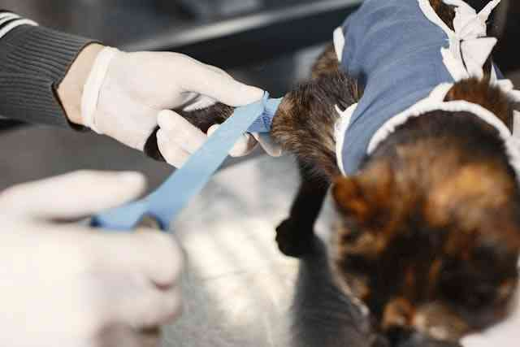

アジャストペットファーストの主な業務
アジャストペットファースト株式会社は、
ペットの生涯に寄り添うためのペットの総合企業です。
グループが掲げる経営理念のもと、
ペットがブリーダーのもとで誕生する時から老後まで、
生涯健康を保ち続けられることを目標にサービスをグループ全体で提供します。
トリミングサロン
ペットの幸せをいちばんに考える、“ペットのための総合企業”が運営するペットサロン
トリミングはおしゃれのためだけでなく、ワンちゃんの健康維持や家族みんなの幸せなペットライフのためにも大切な意味を持ちます。トリミングとグルーミング(お手入れ)をセットで行なうことでプロの視点で健康状態をチェックし、体臭や皮膚炎などのトラブルも予防。ペットの一生涯に寄り添うサービスを提供するペッツファーストグループならではの、より上質なサービスとハイクオリティな接客＆技術を追求し続けています。
ペットショップ
動物病院

ペットショップ併設の病院から、最先端の医療機器を備えた高度医療センターまで、全国に展開
首都圏・関西・九州エリアに10カ所の一次診療の動物病院・クリニックを運営。2022年12月には、二次診療まで対応する高度医療センターを開院しました。高度医療センターでは、CTやMRIなどの医療機器を導入し、子猫や子犬の先天性疾患の治療にも対応。ペットを最優先に考えた医療サービスの提供を目指し、最先端の医療設備や技術を追及し続けます。
その他
ペット最優先のサービスに動物医療が広く関わるペッツファーストグループの獣医師は、動物病院内での勤務 のほか、ウェルネス管理センター（※ブリーダーからお預かりしたばかりの幼いペットの健康管理を行う施 設）での勤務をはじめ、ブリーダーへの往診・ペットショップの往診巡回など様々な業務があります。詳しく はご応募いただく際にお問い合わせください。